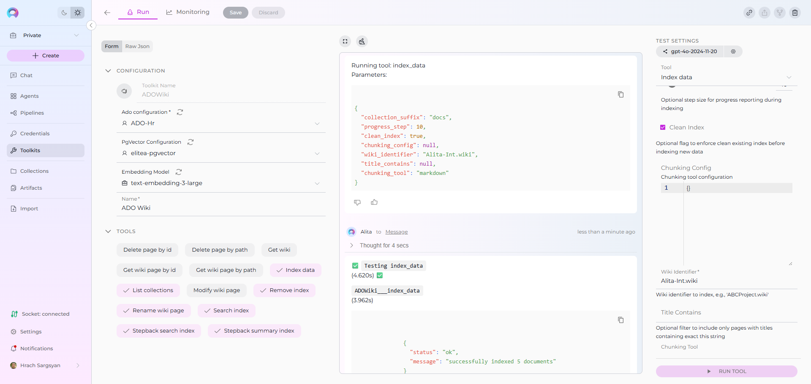
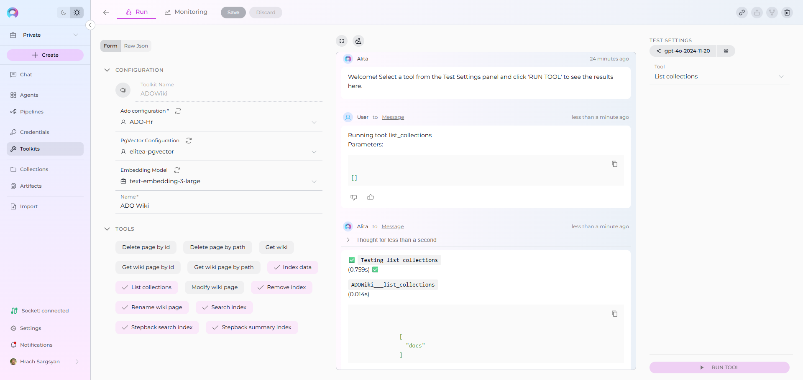

Index ADO Wiki Data¶
Availability
Indexing tools are available in the Next environment (Release 1.7.0) and replace legacy Datasources/Datasets. For context, see Release Notes 1.7.0 and the Indexing Overview.
Overview¶
ADO Wiki indexing allows you to create searchable indexes from your Azure DevOps wiki content:
- Wiki Pages: Documentation, procedures, knowledge articles, and technical specifications
- Project Wikis: Organization-specific wikis with project documentation and standards
- Code Wikis: Repository-linked wikis containing development documentation and guides
- Page Hierarchies: Nested page structures, categories, and topic organization
- Page Metadata: Creation dates, modification history, author information, and page properties
What you can do with indexed ADO Wiki data:
- Semantic Search: Find documentation and procedures across projects using natural language queries
- Context-Aware Chat: Get AI-generated answers from your wiki content with citations to specific pages
- Cross-Project Discovery: Search across multiple ADO wikis and project documentation
- Knowledge Management: Transform scattered documentation into searchable organizational knowledge
- Documentation Analysis: Analyze documentation patterns, gaps, and content quality for improvement
Common use cases:
- Finding existing documentation before creating new content to avoid duplication
- Onboarding new team members by allowing them to ask questions about processes and standards
- Analyzing documentation coverage gaps and identifying areas needing additional content
- Support teams searching for troubleshooting guides and standard operating procedures
- Project managers extracting insights from team documentation for reporting and process improvement
Prerequisites¶
Before indexing ADO Wiki data, ensure you have:
- ADO Credential: An Azure DevOps personal access token with authentication credentials configured in ELITEA
- Vector Storage: PgVector selected in Settings → AI Configuration
- Embedding Model: Selected in AI Configuration (defaults available) → AI Configuration
- ADO Wiki Toolkit: Configured with your Azure DevOps organization details and credentials
Required Permissions¶
Your ADO credential needs appropriate permissions based on what you want to index:
For Content Access:
- Read access to Azure DevOps projects and wikis
- Permission to view the specific wikis you want to index
For Comprehensive Indexing:
- Access to view wiki page content and metadata
- Permission to view both project wikis and code wikis (based on your requirements)
- Access to specific projects containing the wikis you want to index
Authentication Method:
- ADO Personal Access Token: Token generated in Azure DevOps with appropriate wiki read permissions
Step-by-Step: Creating an ADO Credential¶
- Generate ADO Personal Access Token in your Azure DevOps account (User Settings → Personal Access Tokens → New Token)
- Create Credential in ELITEA: Navigate to Credentials → + Create → ADO → enter details and save
Detailed Instructions
For complete credential setup steps including personal access token generation and security best practices, see:
Step-by-Step: Configure ADO Wiki Toolkit¶
- Create Toolkit: Navigate to Toolkits → + Create → ADO Wiki
- Configure Settings: Set ADO organization URL, project, and assign your ADO credential
- Enable Tools: Select
Index Data,List Collections,Search Index,Stepback Search Index,Stepback Summary Index, andRemove Indextools - Save Configuration
Tool Overview:¶
- Index Data: Creates searchable indexes from ADO wiki pages and documentation
- List Collections: Lists all available collections/indexes to verify what's been indexed
- Search Index: Performs semantic search across indexed content using natural language queries
- Stepback Search Index: Advanced search that breaks down complex questions into simpler parts for better results
- Stepback Summary Index: Generates summaries and insights from search results across indexed content
- Remove Index: Deletes existing collections/indexes when you need to clean up or start fresh
Configuration Settings:¶
| Setting | Description | Example Value |
|---|---|---|
| Organization URL | Azure DevOps organization URL | https://dev.azure.com/yourorg/ |
| Project | Azure DevOps project name | MyProject |
| Token | ADO personal access token for authentication | Select from Secrets or enter directly |
ADO URL Format
Use the complete Azure DevOps organization URL including https:// and your organization name (e.g., https://dev.azure.com/yourorg/).
Detailed Instructions
For complete toolkit configuration including URL setup and authentication options, see:
Step-by-Step: Index ADO Wiki Data¶
Wiki Page Indexing (from Toolkit)¶
-
Open Toolkit Test Settings:
- Navigate to your ADO Wiki toolkit's detail page
- In the Test Settings panel (right side), select a model (e.g.,
gpt-4o)
-
Configure Index Data Tool:
- From the tool dropdown, select "Index Data"
- Configure the following parameters:
Parameter Description Example Value Wiki Identifier * Wiki identifier to index data from (required) ProjectName.wikiorRepoName.wikiCollection Suffix * Suffix for collection name (max 7 chars) docsorwikiProgress Step Step size for progress reporting during indexing 10(default)Clean Index Remove existing index data before re-indexing ✓ (checked) or ✗ (unchecked) Title Contains Optional filter to include only pages with titles containing this string APIor leave emptyChunking Tool Method for splitting content into chunks markdown(default)Chunking Config Configuration settings for content chunking {"chunk_size": 4000, "chunk_overlap": 200} -
Run ADO Wiki Indexing:
- Click "Run Tool"
- Wait for completion (may take several minutes for large wikis)
- Check the output for success confirmation or error messages
Real-Life Example: Indexing Development Team Documentation¶
Scenario: You have a development team wiki in Azure DevOps containing project documentation, API guides, and troubleshooting information. You want to make this documentation searchable for your team.
Indexing Steps:
-
Configure ADO Wiki Toolkit:
- Organization URL:
https://dev.azure.com/mycompany/ - Project:
WebApp - Token: Your ADO Personal Access Token
- Organization URL:
-
Index the Project Wiki:
- Wiki Identifier:
WebApp.wiki - Collection Suffix:
docs - Progress Step:
10 - Clean Index: ✓ (checked for fresh start)
- Title Contains: (leave empty to index all pages)
- Chunking Tool:
markdown - Chunking Config:
{"chunk_size": 4000, "chunk_overlap": 200}
- Wiki Identifier:
-
Run the indexing:
- Click "Run Tool"
- Wait for completion (progress reported every 10 pages)
- Verify success in output logs

- Test your indexed data:
- Use "List Collections" tool to confirm
docscollection exists
- Use "List Collections" tool to confirm

Result: Your team can now ask natural language questions about your documentation and get instant answers with citations to specific wiki pages.
After indexing, you can search for:
- API documentation: "Find all REST API endpoints for user authentication"
- Development procedures: "What are the deployment steps for the payment service?"
- Architecture information: "Show me the microservices communication patterns"
- Troubleshooting guides: "How do we debug database connection issues?"
- Setup instructions: "What are the local development environment requirements?"
Search and Chat with Indexed Data¶
Once your ADO Wiki data is indexed, you can use the toolkit to search and interact with your documentation in multiple ways:
Using Toolkit in Conversations and Agents¶
Your ADO Wiki toolkit can be used in two main contexts:
- In Conversations: Add the toolkit as a participant to ask questions and search your indexed wiki data
- In Agents: Include the toolkit when creating AI agents to give them access to your documentation
How to use:
- Start a New Conversation or Create an Agent
- Add Toolkit as Participant: Select your ADO Wiki toolkit from the available toolkits
- Ask Natural Language Questions: The toolkit will automatically search your indexed data and provide relevant answers with citations
Using Indexed ADO Wiki Data in Conversations¶
Let's walk through a complete example of querying indexed documentation:
Step 1: Add toolkit to a conversation and start asking questions:
- Navigate to Chat → + Create
- In the participants section click + to add Toolkit
- Select your ADO Wiki toolkit from the available toolkits list

Step 2: Start comprehensive analysis with your indexed documentation
-
User Request: "Find all documentation related to microservices deployment and provide a summary of the deployment process from our wiki collection."
-
ADO Wiki Toolkit: "Based on your indexed wiki pages, here's a comprehensive summary of microservices deployment:
Deployment Documentation Found:
- CI/CD Pipeline Setup: Complete guide for automated deployment workflows
- Environment Configuration: Development, staging, and production environment setup
- Container Deployment: Docker containerization and Kubernetes deployment procedures
- Database Migration: Scripts and procedures for database schema updates
- Service Discovery: Configuration for service registration and discovery mechanisms
Deployment Process Summary:
Pre-Deployment:
- Code review and merge to main branch
- Automated testing pipeline execution
- Security scanning and quality gates validation
Deployment Stages:
- Development: Automatic deployment on code commit
- Staging: Manual approval with integration testing
- Production: Blue-green deployment with rollback capabilities
Post-Deployment:
- Health checks and monitoring validation
- Performance metrics verification
- Service mesh configuration updates
Key Configuration Files:
docker-compose.yml: Container orchestrationdeployment.yaml: Kubernetes deployment manifestspipeline.yml: CI/CD pipeline configuration
Rollback Procedures:
- Automated rollback triggers on health check failures
- Manual rollback commands for emergency situations
- Database rollback scripts for schema changes
[Citations: Deployment Guide v2.1, Container Best Practices, Production Runbook]"

Advanced Search Examples¶
Searching for specific technical information:
-
User: "What are the authentication mechanisms used across our microservices?"
-
ADO Wiki Toolkit: "According to the indexed documentation, your microservices use a multi-layered authentication approach:
Authentication Methods:
- JWT Tokens: Primary authentication for API calls
- OAuth 2.0: Third-party service integration
- Service-to-Service: Mutual TLS authentication
- API Keys: External partner integration
Implementation Details:
- Token expiration: 1 hour for user tokens, 24 hours for service tokens
- Refresh token rotation: Enabled for enhanced security
- Certificate management: Automated renewal via cert-manager
[Citations: Authentication Architecture, API Security Guide, Service Mesh Configuration]"

Finding troubleshooting information:
-
User Request: "How do we handle database connection timeouts in the order service?"
-
ADO Wiki Toolkit: "Based on the troubleshooting documentation for the order service:
Database Connection Timeout Resolution:
Immediate Actions:
- Check connection pool utilization in monitoring dashboard
- Verify database server health and resource usage
- Review recent deployment changes that might affect connections
Configuration Adjustments:
- Connection timeout: Increase from 30s to 60s if needed
- Pool size: Adjust based on load patterns (current: min=5, max=20)
- Retry logic: Exponential backoff with 3 retry attempts
Monitoring and Alerts:
- Connection pool metrics in Grafana dashboard
- Alert thresholds: >80% pool utilization
- Log aggregation in ELK stack for pattern analysis
[Citations: Order Service Troubleshooting Guide, Database Configuration, Monitoring Setup]"
Managing Your ADO Wiki Indexes¶
Updating Indexed Content¶
When your wiki content changes significantly:
- Re-run Index Data tool with the same parameters to update existing indexes
- Use Clean Index option to completely refresh the collection with current content
- Monitor indexing progress through the progress step reporting
Best Practices¶
Collection Organization:
- Use descriptive collection suffixes that reflect content types
- Create separate collections for different teams or purposes
- Consider wiki scope when planning collection structure
Content Filtering:
- Use
Title Containsparameter for focused indexing - Index frequently updated content separately for easier maintenance
- Consider page hierarchy when organizing collections
Performance Optimization:
- Index during low-usage periods for large wikis
- Use appropriate chunking settings for your content types
- Monitor vector storage usage and clean up unused collections
Troubleshooting¶
Common Issues¶
Authentication Errors:
- Verify ADO personal access token has wiki read permissions
- Check organization URL format and project name accuracy
- Ensure token hasn't expired
Wiki Not Found:
- Confirm wiki identifier format (
ProjectName.wikifor project wikis) - Verify you have access to the specified project and wiki
- Check if the wiki exists and contains pages
Indexing Failures:
- Review wiki content for formatting issues that might cause parsing errors
- Check for very large pages that might exceed processing limits
- Verify vector storage configuration and available space
Poor Search Results¶
Problem: Search queries return irrelevant or no results
Solutions:
- Try more specific, detailed search queries related to your documentation content
- Adjust the Cut Off score (lower for more results, higher for precision)
- Use Stepback Search Index for complex documentation questions
- Verify the Collection Suffix targets the right dataset
Getting Help¶
For additional support with ADO Wiki indexing:
- Check Vector Storage: Verify PgVector is properly configured and accessible
- Review Toolkit Configuration: Ensure all required fields are properly set
- Test with Small Dataset: Start with a limited wiki or filtered content
- Contact Support: Reach out to ELITEA support with specific error messages and configuration details
Related Documentation
For additional information and detailed setup instructions, see:
- Indexing Overview - Complete guide to ELITEA's indexing system and capabilities
- Indexing Tools - Detailed reference for all indexing tools and parameters
- ADO Wiki Toolkit Guide - Comprehensive guide to the ADO Wiki Toolkit and its capabilities
- How to Use Credentials - ADO credential setup and management
- AI Configuration - Set up vector storage and embedding models for indexing
- Toolkits Menu - General toolkit configuration and management
- Chat Menu - Create conversations and add toolkits as participants
- Agents Menu - Create AI agents with access to your indexed ADO Wiki data